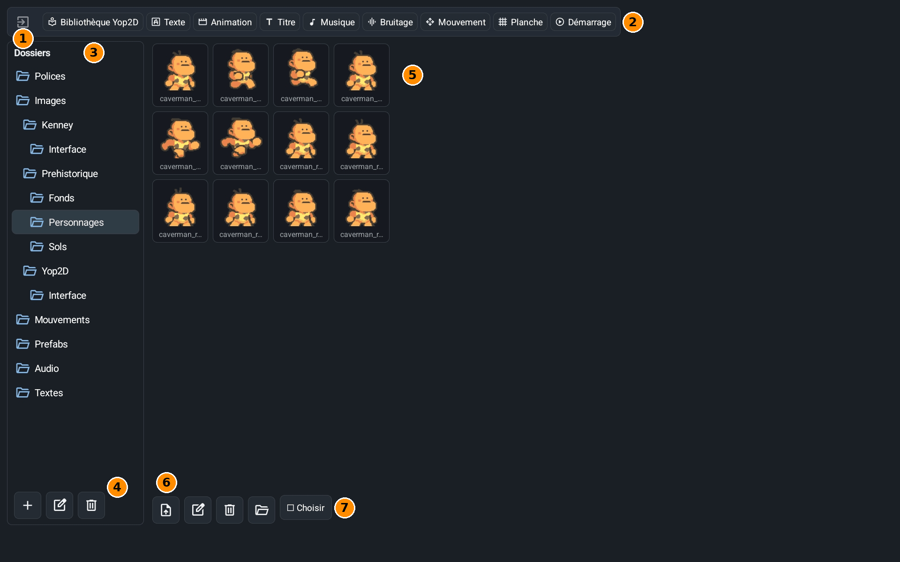
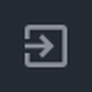

La fenêtre Assets est la boîte où Yop2D range tous les fichiers de ton projet (images, sons, polices, textes…) et d'où tu lances les outils qui en fabriquent. Tu l'ouvres avec le bouton Assets du panneau de gauche de l'éditeur.
La fenêtre en un coup d'œil

- 1Sortie : ferme la fenêtre et revient à l'éditeur.
- 2La rangée d'outils : chaque bouton ouvre un outil (voir la liste plus bas).
- 3Dossiers : tous les dossiers de ton projet. Touche un dossier pour voir son contenu. Les dossiers de départ sont Polices, Images, Mouvements, Prefabs, Audio et Textes.
- 4Les boutons des dossiers : créer un dossier (+), le renommer, le supprimer.
- 5Les fichiers du dossier choisi, en vignettes. Pour ranger un fichier, garde le doigt dessus puis glisse-le sur un dossier de l'arbre : les chemins sont mis à jour tout seuls.
- 6Les boutons des fichiers : importer, renommer, supprimer, déplacer.
- 7Choisir : permet de cocher plusieurs fichiers pour les supprimer ou les déplacer d'un coup.
Les outils de la rangée du haut
- Bibliothèque Yop2D : des images, des sons, des musiques, des polices et des titres tout prêts, avec les packs et les prefabs à télécharger.
- Texte : écrire les textes du jeu (le fichier dialogues.txt), dans plusieurs langues.
- Animation : réunir des images en animations (marche, saut…).
- Titre : créer des styles de titres (couleur, contour, police).
- Musique : composer une musique avec des blocs (Android 10 ou plus récent).
- Bruitage : fabriquer un bruitage ou transformer un son prêt à l'emploi (Android 10 ou plus récent).
- Mouvement : faire bouger un objet par étapes (position, rotation, taille, transparence).
- Planche : découper une planche d'images en animations.
- Démarrage : créer l'écran de démarrage de ton jeu (image, titre, musique).
Les petits boutons

Sortie
Ferme la fenêtre.- Nouveau dossier
Crée un dossier dans le dossier choisi. - Renommer le dossier
Change le nom du dossier choisi. Les objets gardent leurs images. - Supprimer le dossier
Efface le dossier choisi. - Importer
Ajoute dans le dossier choisi un fichier de ta tablette (image, son, police…). Un fichier .zip de prefab est rangé dans Prefabs. - Renommer
Change le nom d'un fichier. Les objets qui l'utilisent gardent leur image. - Supprimer
Efface le fichier choisi. - Déplacer
Range le fichier choisi dans un autre dossier.